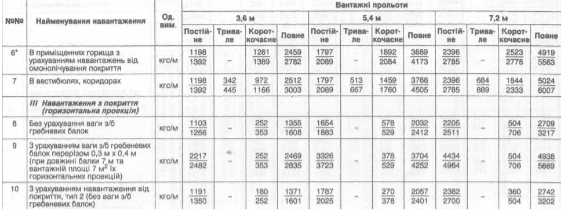

Необхідно описати веб-сторінку для вантажних прольотів. Таблиця виглядає наступним чином
| № | Найменування навантаження | Од. вим. | Вантажні прольоти | |||||||||||
|---|---|---|---|---|---|---|---|---|---|---|---|---|---|---|
| 3.6 м | 5.4 м | 7.2 м | ||||||||||||
| Постійне | Тривале | Короткочасне | Повне | Постійне | Тривале | Короткочасне | Повне | Постійне | Тривале | Короткочасне | Повне | |||
| 6* | В приміщеннях горища з урахуванням навантажень від омонолічування покриття | кгс/м | 1198/1392 | - | 1198/1392 | 1198/1392 | 1198/1392 | - | 1198/1392 | 1198/1392 | 1198/1392 | - | 1198/1392 | 1198/1392 |
| 7 | В вестибюлях, коридорах | кгс/м | 1198/1392 | 1198/1392 | 1198/1392 | 1198/1392 | 1198/1392 | 1198/1392 | 1198/1392 | 1198/1392 | 1198/1392 | 1198/1392 | 1198/1392 | 1198/1392 |
| III Навантаження з покриття (горизонтальна проекція) | ||||||||||||||
| 8 | Без урахування ваги з/б гребневих балок | кгс/м | 1198/1392 | - | 1198/1392 | 1198/1392 | 1198/1392 | - | 1198/1392 | 1198/1392 | 1198/1392 | - | 1198/1392 | 1198/1392 |
| 9 | З урахуванням ваги з/б гребеневих балок перерізом 0,3 м х 0,4 м (при довжині балки 7 м та вантажній площі 7 м та вантажній площі 7 м^2 їх горизонтальних проекцій) | кгс/м | 1198/1392 | - | 1198/1392 | 1198/1392 | 1198/1392 | - | 1198/1392 | 1198/1392 | 1198/1392 | - | 1198/1392 | 1198/1392 |
| 10 | З урахуванням навантаження від покриття, тип 2 (без ваги з/б гребеневих балок) | кгс/м | 1198/1392 | - | 1198/1392 | 1198/1392 | 1198/1392 | - | 1198/1392 | 1198/1392 | 1198/1392 | - | 1198/1392 | 1198/1392 |